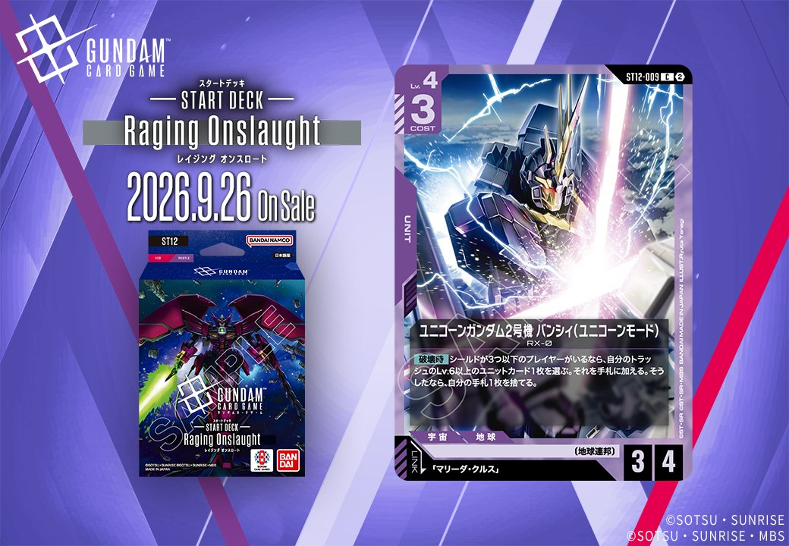

今回は「Generation Pulse」に収録される紫のUNIT「ユニコーンガンダム2号機 バンシィ(ユニコーンモード)」(ST12-009)を紹介します。本カードは「マリーダ・クルス」とのリンクを持ち、発売日は2026年9月26日です。

ユニコーンガンダム2号機 バンシィ(ユニコーンモード) (ST12-009)
| 色 | 紫 | タイプ | UNIT |
| Lv | 4 | コスト | 3 |
| AP | 3 | HP | 4 |
| 特徴 | 〔地球連邦〕 | ||
| リンク条件 | 「マリーダ・クルス」 | ||
効果: 【破壊時】シールドが3つ以下のプレイヤーがいるなら、自分のトラッシュのLv.6以上のユニットカード1枚を選ぶ。それを手札に加える。そうしたなら、自分の手札1枚を捨てる。
COST3でAP3/HP4と標準的なステータスを持つLv.4ユニット。【破壊時】にシールドが3つ以下のプレイヤーがいれば、トラッシュのLv.6以上のユニット1枚を手札に加え、手札1枚を捨てる効果を持つため、盤面が削れた終盤ほど回収価値が高まる。 リンク先の「マリーダ・クルス」は、同日公開のプルトゥエルブ(ST12-012)が「マリーダ・クルス」として扱われ、こちらのリンク条件を満たせる点が噛み合う。発売は2026-09-26。
関連カード
-
 プルトゥエルブ(ST12-012)NEW紫系 — 同色・共通特徴: 地球連邦（新カード）
プルトゥエルブ(ST12-012)NEW紫系 — 同色・共通特徴: 地球連邦（新カード） -
 ユニコーンガンダム2号機 バンシィ(デストロイモード)(ST12-006)NEW紫系 — 同色・共通特徴: 地球連邦（新カード）
ユニコーンガンダム2号機 バンシィ(デストロイモード)(ST12-006)NEW紫系 — 同色・共通特徴: 地球連邦（新カード） -
 三日月・オーガス(ST05-010)紫系デッキ内採用率36.2% (1921デッキ)
三日月・オーガス(ST05-010)紫系デッキ内採用率36.2% (1921デッキ) -
 ガンダム・バルバトスアダプト(GD03-056)紫系デッキ内採用率36.2% (1920デッキ)
ガンダム・バルバトスアダプト(GD03-056)紫系デッキ内採用率36.2% (1920デッキ) -
 ガンダム・バルバトス（第1形態）(GD02-054)紫系デッキ内採用率35.1% (1860デッキ)
ガンダム・バルバトス（第1形態）(GD02-054)紫系デッキ内採用率35.1% (1860デッキ) -
 マリーダ・クルス(GD01-093)赤系デッキ内採用率7.5% (399デッキ)
マリーダ・クルス(GD01-093)赤系デッキ内採用率7.5% (399デッキ) -
マリーダ・クルス(GD01-093_p1)赤系デッキ内採用率0% (0デッキ)
-
マリーダ・クルス(GD01-093_p2)赤系デッキ内採用率0% (0デッキ)
-
マリーダ・クルス(GD01-093_p3)赤系デッキ内採用率0% (0デッキ)